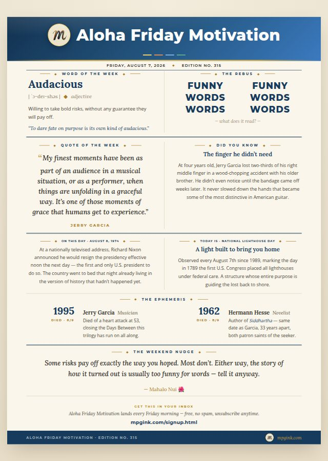

Happy Aloha Friday. 🌺
One thing before we start. After eight years of living on LinkedIn, Aloha Friday Motivation is now its own email newsletter — same thing, every Friday morning, delivered straight to you instead of waiting on an algorithm to decide you should see it. Click here to sign up — free, no spam, unsubscribe anytime. If you've been reading these for years, this is the one week I'll ask you to move over.
Also: Edition #315. That one belongs to Syracuse and Central New York — the Salt City, the 315, yours before it's anyone else's. And 3/15 is the Ides of March, the most famous you were warned and did it anyway date on the calendar. For an edition about daring fate out loud, I'll take the omen.
Samson started this trilogy in a lobby on Kauai. Ruby Claire and Althea continued it on a cheeseburger run in Connecticut. This is how it ends: Alabama, a dare, and a dog nobody was actually trying to adopt.
We'd been trying to have a baby for a while. It wasn't working. Tiffany started looking at dogs to adopt instead, and one of us — I don't remember who said it first, but I know we both meant it — floated the joke that's stuck with us since: we're going to rescue another dog, working hard at having a baby, that's not working, so let's get another dog for now. It was a dare, dressed up as a consolation prize. We're getting a dog in place of the kid — so go ahead, universe, give us a kid. We dare you.
Tiffany found him online, a few towns over, at a foster home with a litter of puppies. We went to meet him, and I already knew — the way it had gone in Connecticut, the way it had gone in Kauai — that we weren't coming home without a dog. We brought Samson with us on purpose this time, to meet him first, ease the introduction, learn from how it had gone before.
He didn't have a name yet. Just a small, blondish-red puppy, skittish, who ate a piece of poop in front of us within the first few minutes — something we'd learn was less a first-impression accident and more a whole personality trait. He wanted to be close to you and would growl the second you gave him too much of it. Before us, somebody had almost certainly not been kind to him.
He turned out to be the sickliest of all four dogs. Worms. Patchy hair loss. An allergy panel that came back, and I mean this literally, allergic to everything. And somehow also the most determined — a small puppy trying to out-alpha Althea, who was never going to allow it, antagonizing Ruby Claire because she was just as small as he was, angling for a friendship with Samson that Samson wasn't always in the mood to give back. So he did the only thing that worked: he wedged himself into whatever dog bed was occupied, growls and all, and stayed there until it wasn't a fight anymore. That's how you get taken in when nobody invited you. You just don't leave.
We named him Dupree — like the others, for a Grateful Dead song, Dupree's Diamond Blues, Hunter and Garcia's telling of a 1921 Atlanta jewel heist gone very wrong. We call him Dupree's Diamond Blondes now, because he's blonde and because the pun was sitting right there. Neither of us has ever fully let go of the theory that our own Dupree came from Atlanta too — same unverifiable guess we made about Ruby Claire and Althea, same city showing up twice in a family that keeps naming its dogs after the same band's songs.
This one lands on purpose. Jerry Garcia died August 9, 1995, at 53 — the far end of the Days Between that started with his birthday, the anchor for Part 2 of this trilogy. Hermann Hesse died the same date, 33 years earlier — a novelist who spent his whole career writing about people who go looking for something without a map. Two patron saints of the search, same day, decades apart. This whole trilogy has been about what shows up while you're looking for something else.
Three months after we brought Dupree home, Tiffany was pregnant with our first kid.
I don't have a clean way to explain that. I just know we tempted fate on purpose, out loud, as a joke — and fate apparently has a sense of humor, because it said yes. We went from four dogs to four dogs and a kid on the way, and the whole thing is still, all these years later, too funny for words. We tell it anyway.
Next Friday: something that isn't about dogs. Probably.
Weekend Nudge: What's the audacious thing you've dared to happen, half as a joke, that actually came true?
Mahalo Nui. 🌺
— Matthew
New: AFM by email. After eight years of living on LinkedIn, Aloha Friday Motivation now goes out as a real newsletter too — same thing, every Friday morning, delivered to your inbox instead of waiting on an algorithm to show it to you. Free, no spam, unsubscribe anytime.
